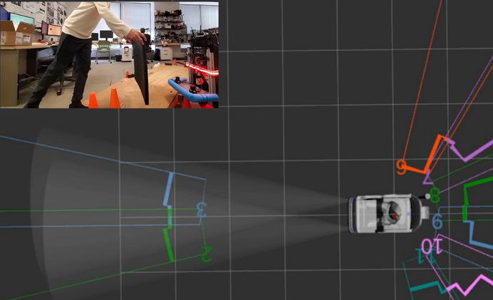

WORK PROJECT / EMBEDDED & CONTROLS
Transparent obstacle sensing
Sonar integration and sensor placement studies for detecting glass during robot navigation.
Project context
Transparent obstacles can be difficult for a robot to detect reliably. This project explored a network of sonar sensors as an input to motion planning.
My contributions
- Integrated sonar sensors and CAN data reception for motion planning.
- Performed range testing using an experimental cart.
- Evaluated mounting positions to reduce interference from ground reflections.

